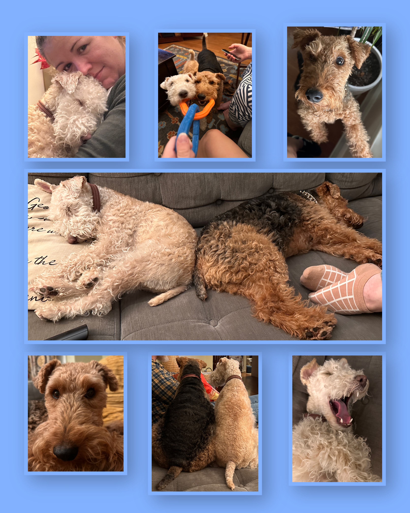

About Me
Hi! My name is Cicely James (CJ) Campen, I use any pronouns, and I'm from Cleveland, Ohio!
I am currently an undergraduate student at the University of Kentucky studying linguistics and viola performance. I plan to finish both my undergraduate and graduate programs in just 4 years using the Accelerated Masters Pathways (AMP) Program.
Education
- Lakewood High School
- — Graduated in 2024
- — National Honor Society
- — Electric violist in The Lakewood Project (my highschool's rock orchestra)
- University of Kentucky
- — Linguistics Major, Viola Performance Minor
- — UK Symphony & Philharmonia Orchestras
- — Set to finish undergrad May 2028
- Classes I've Taken
- LIN 221 'Intro to Linguistics'—
- LIN 200 'How to Create a Language'—
- LIN 305 'Words & Sentences'—
- LIN 317 'Language & Society: Slang'—
- LIN 301 'Computation for Linguistics'—
- LIN 300 'Speech Sounds'—
- MUS 174 'Theory-nonmusic Majors'—
Iterests
- I am a section leader for the violas in the UK Philharmonic Orchestra.
- I love watching and analyzing movies, especially horror & comedy movies.
Songs I Like
My Dogs!
Meet my dogs Scout & Daisy!

Contact Info
Email: cmca319@uky.edu
Instagram: micgillicutty_campen
TikTok: micgillicutty_campen
GitHub: github.com
YouTube: @xoxo_cj